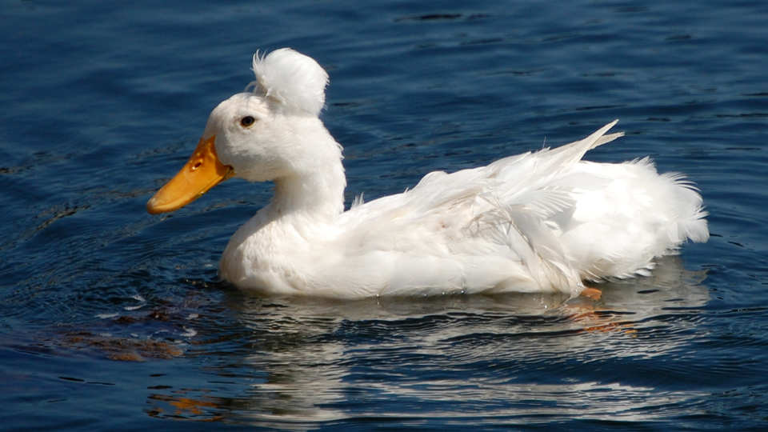

Swan
A swan (Cygnini) is a kind of water bird, from the genera Cygnus and Coscoroba. They are in the
subfamily Anserinae, in the family Anatidae, which also includes geese and ducks.Many swans live
in colder places, such as northern Europe, Asia and North America. They live on water. They swim
on top of the water and eat plants off the bottom of ponds, lakes, or oceans. They also eat insects
and other small animals. A baby swan is called a cygnet.
Swans are tough, strong birds who will stand no nonsense from dogs or cats. They may open their wings
as a warning, but from then on a person is advised to keep clear. Swans are highly protective of their
nests. They will attack anything they see as a threat to their chicks, including humans.

The Swan
The swans are some of the largest flying birds. They are large in size and have large feet and long
necks. The males are usually bigger and heavier than females. The mute swan, trumpeter swan, and
whooper swan are the largest swans. They can be over 1.5m (60 inches) long. They can weigh over 15kg
(33 pounds). Their wingspans (this means the length of both wings) can be almost 3m (10 ft).
Most swans are white. They are found in the Northern Hemisphere. This means they are found in Europe,
Asia and North America. However, the black swan is black with a red beak. It lives in Australia. The
black necked swan has white flight feathers, and black outer feathers. It lives in South America. They
also have a small area of skin between the eyes and beak that has no feathers. This area can be different
colors, such as yellow (for example, on a Bewick's swan) or orange (for example, on a mute swan).
Wild swans migrate. They spend the cold part of the year eating and getting fat in one place and move to
a warmer place to lay eggs and raise chicks, called cygnets.The coscoroba swan is different to the other
swans. Some scientists think it is more like a duck or a goose. It is the smaller than the other swans.
This swan lives in South America.